LINKS
July 2, 2019
An article by Sergey Matrosov
These instructions will help you to get started with the BigQuery interface. All you need to try it is a Google account: that’s it!BigQuery, in a nutshell, is cloud storage that may include data from many data sources, such as Google Analytics, Google Ads, Salesforce, etc. Here is the new version:
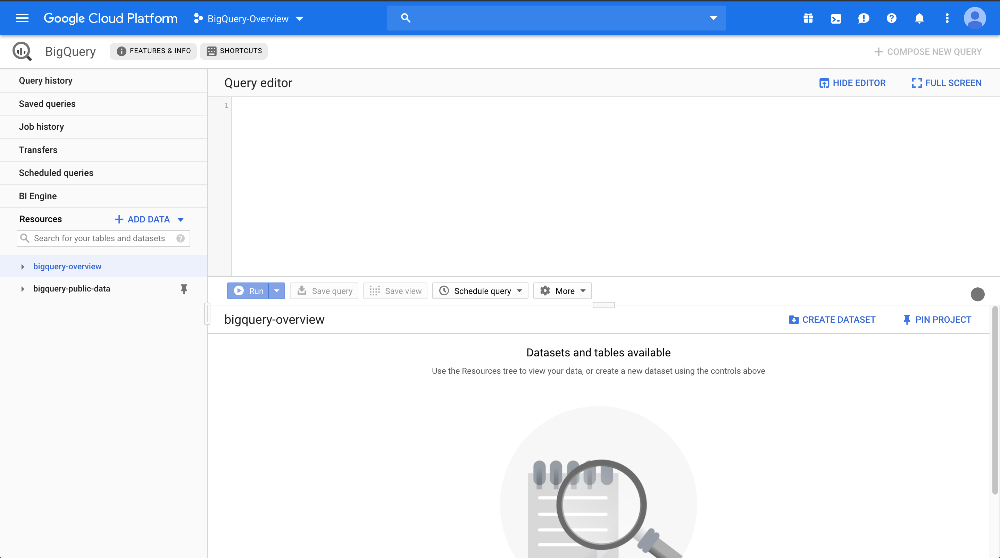
First of all, let’s think about projects.
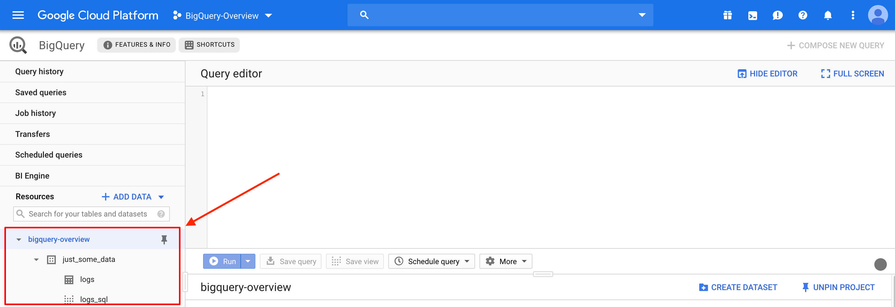
A project is a namespace that consists of different types of data. In our case, the project is “bigquery-overview”. The data in this project are organized into data sets, which are stored as data tables and SQL queries. In our case, an example of a data set is “just_some_data”, which has a table named “logs” and an SQL query named “logs_sql”. You can tell the difference between a table and a query by the icon next to it, but the “_sql” suffix is added just to make it easy.
The SQL query is also called “view” in BigQuery. In other words, you could think of view as a saved query, but they are not equal entities (this will be shown later). The query has only two main goals:
● To calculate the (mostly regularly updated) data for storing in the table.
● To calculate data on the fly. For example, you may need to know something on a weekly basis, but it is unimportant, so there is no need to store it in the table.
In our example, we are concerned with the first goal (we’ll discuss how to update the table in another article). We have the “logs_sql” view that forms the “logs” table. A table doesn’t necessarily have an SQL view, for example if it stores data just for archiving or it is updated directly from the source, (e.g., Google Ads through Google Ads Scripts) or through BQ’s data transfer service (we will review this later).
Each table has a schema, details and a preview. The preview shows the data themselves. The most important items are the schema and the preview. Let’s take a look at “unique_keys”:
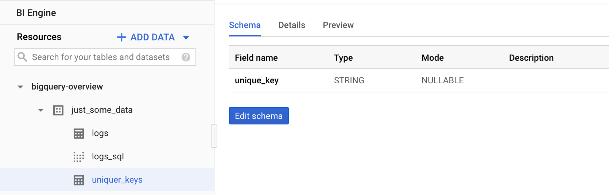
If you want to make new table from an existing one, you always need to know three things: what to take (that’s why “Description” must be filled in, unlike in my example), the name of the entity (“Field name”) and it’s type (“Type”), in order to handle it correctly. The schema will show them all.
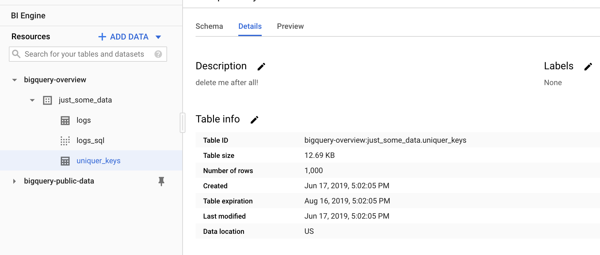
“Details” helps you understand when the table was last modified. This is crucial because some tables could contain invalid data (in other words, the table has been abandoned). Table ID is also useful: like the data in the schema, it will help you in your query. Other data are less important from my point of view, especially for marketers.
Now we can take a look at how to query. We can do it on the table level or on the view level. Let’s start from the table level. Go to one of your tables and press the “query table” button:
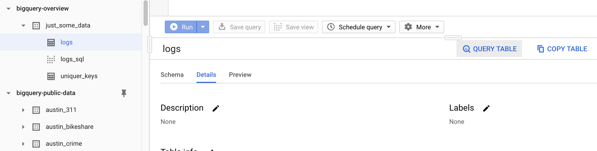
In the code field, you’ll get:
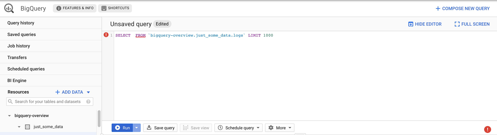
You can see the notification on line 1. This is a validator that checks your query and tells you if there is an error. Click on the right corner of the notification and it will show what’s wrong.
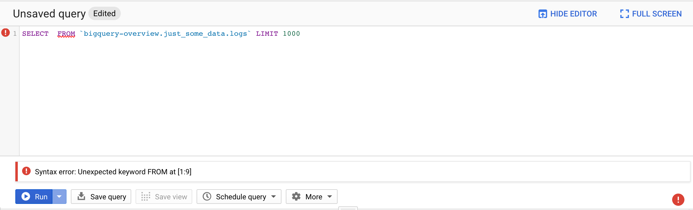
In our example it tells us that we didn’t choose a field from the table “logs”, and therefore we could not compose a new table/view. The validator also estimates the number of bytes read – very helpful if you want to calculate the query cost.
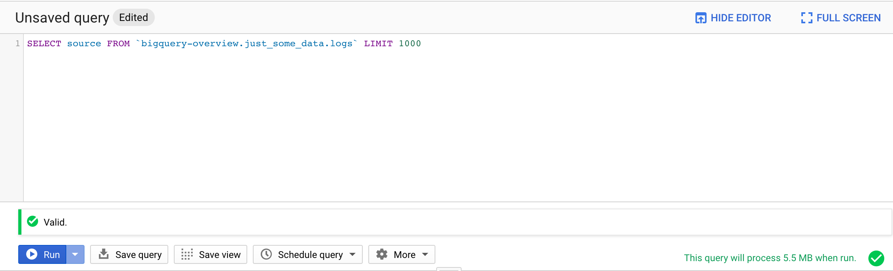
Now everything looks fine. Let’s run it!
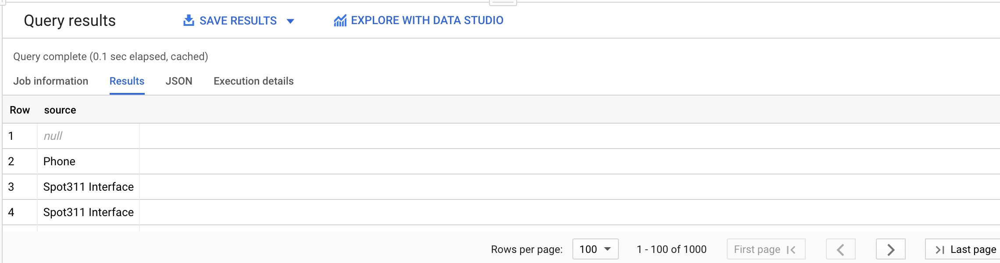
Great, we have some results. Now we could save it, for example, as a table.
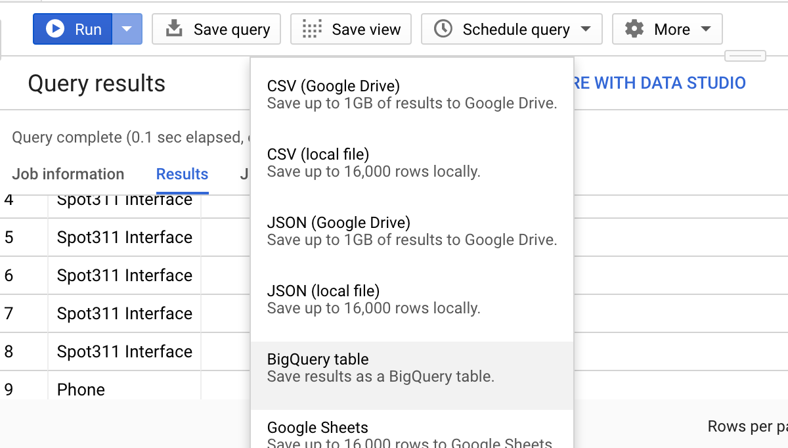
The next steps are easy to follow, so we can omit them.
Another way of composing a query is by using query view. The only difference from the table query is that view will be composed first (and you’ll get a table as a result), then your query will start (based on this table). The main goal of this sequence is to set up an automatic update of a table using Google Apps Scripts, especially if you are using dynamic functions in your view, such as “Current_Date()”. Yes, it could also be done using the option “Scheduled queries”, but the latter must be written in standard SQL.
In addition, you could format your query for readability.
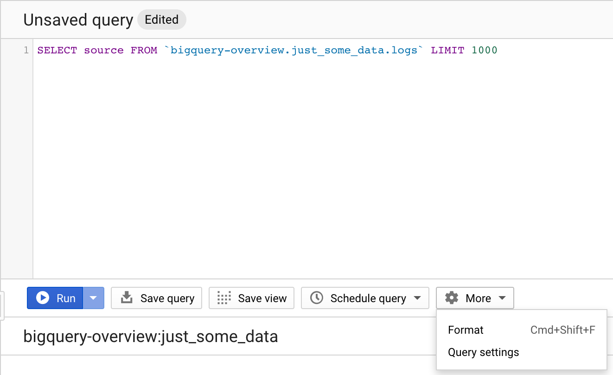
This is what formatted query would look like:
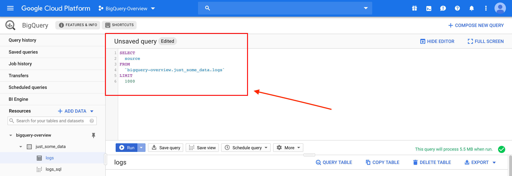
In “Query Settings” you set up the SQL dialect, set the destination for query results (write to (if empty), append to or overwrite the table), etc.
One more thing to mention is the UI menu in the left corner.
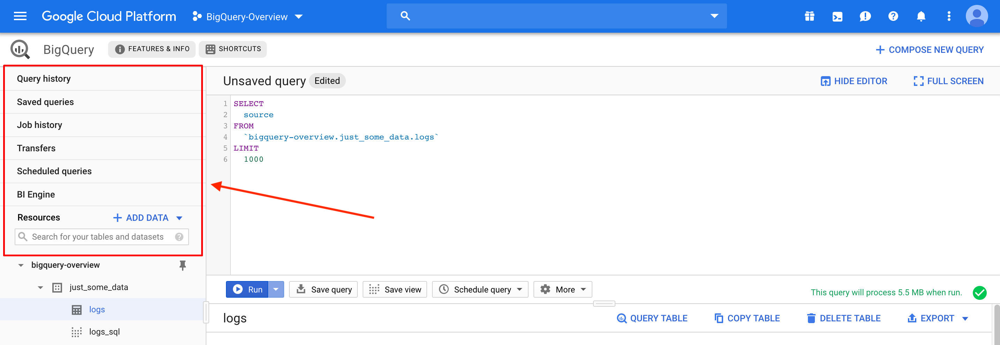
“Query history” temporarily stores all your queries: those with errors and those without them.
Like “saved queries”, it is obvious, but remember what we said about view? It’s like a saved query, but the difference is that only you can see the saved query, whereas view is open to other participants in the project.
“Job history” is also obvious. To understand it fully, you just need to know that jobs are actions associated with loading, exporting, copying and querying data.
“Transfers” contains options to enable data transfer from systems such as Amazon S3, Google Ads, Google Cloud Storage, Google Play, DoubleClick Campaign Manager (DCM), Google Ad Manager (DFP – DoubleClick For Publishers), Redshift and Teradata, and from YouTube channels and content owners.
As we said, “Scheduled queries” could help you automatically update tables, but they must be written in standard SQL. For those who prefer legacy SQL, there is an option through Google Apps Scripts.
“BI Engine” is a new feature of BigQuery that boosts the speed of your queries significantly (so you could perform analytics in real time, interactively). Of course, it costs money.
The last one is “Resources”. You could add your other company projects to your dashboard or explore public data sets for free.
Now it’s your turn. Go to “Resources” -> “Add Data” -> “Explore public datasets”. Choose whatever you like and get started! If you don’t know how to use SQL, it’s not a problem: there are various tutorials on the Internet. Good luck!
LINKS